In this chapter, you will learn:
About the extended entity relationship (EER) model
How entity clusters are used to represent multiple entities and relationships
The characteristics of good primary keys and how to select them
How to use flexible solutions for special data-modeling cases
Preview
In the previous two chapters, you learned how to use entity relationship diagrams (ERDs) to properly create a data model. In this chapter, you will learn about the extended entity relationship (EER) model. The EER model builds on ER concepts and adds support for entity supertypes, subtypes, and entity clustering.
Most current database implementations are based on relational databases. Because the relational model uses keys to create associations among tables, it is essential to learn the characteristics of good primary keys and how to select them. Selecting a good primary key is too important to be left to chance, so this chapter covers the critical aspects of primary key identification and placement.
Focusing on practical database design, this chapter also illustrates some special design cases that highlight the importance of flexible designs, which can be adapted to meet the demands of changing data and information requirements. Data modeling is a vital step in the development of databases that in turn provides a good foundation for successful application development. Remember that good database applications cannot be based on bad database designs, and no amount of outstanding coding can overcome the limitations of poor database design.
5.1 THE EXTENDED ENTITY RELATIONSHIP MODEL
As the complexity of the data structures being modeled has increased and as application software requirements have become more stringent, the need to capture more information in the data model has increased. The extended entity relationship model (EERM), sometimes referred to as the enhanced entity relationship model, is the result of adding more semantic constructs to the original entity relationship (ER) model. As you might expect, a diagram that uses the EERM is called an EER diagram (EERD). In the following sections, you will learn about the main EER model constructs—entity supertypes, entity subtypes, and entity clustering—and see how they are represented in ERDs.
5.1.1 ENTITY SUPERTYPES AND SUBTYPES
Because most employees possess a wide range of skills and special qualifications, data modelers must find a variety of ways to group employees based on their characteristics. For instance, a retail company could group employees as salaried and hourly, while a university could group employees as faculty, staff, and administrators.
The grouping of employees into various types provides two important benefits:
• It avoids unnecessary nulls in attributes when some employees have characteristics that are not shared by other employees.
• It enables a particular employee type to participate in relationships that are unique to that employee type.
To illustrate those benefits, you will explore the case of an aviation business, which employs pilots, mechanics, secretaries, accountants, database managers, and many other types of employees. Figure 5.1 illustrates how pilots share certain characteristics with other employees, such as a last name (EMP_LNAME) and hire date (EMP_HIRE_DATE). On the other hand, many pilot characteristics are not shared by other employees. For example, unlike other employees, pilots must meet special requirements such as flight hour restrictions, flight checks, and periodic training. Therefore, if all employee characteristics and special qualifications were stored in a single EMPLOYEE entity, you would have a lot of nulls or you would have to create a lot of needless dummy entries. In this case, special pilot characteristics such as EMP_LICENSE, EMP_RATINGS, and EMP_MED_TYPE will generate nulls for employees who are not pilots. In addition, pilots participate in some relationships that are unique to their qualifications. For example, not all employees can fly airplanes; only employees who are pilots can participate in the “employee flies airplane” relationship.
FIGURE 5.1 Nulls created by unique attributes
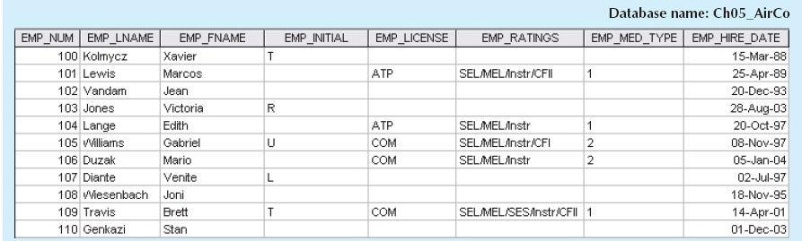
SOURCE: Course Technology/Cengage Learning
Based on the preceding discussion, you would correctly deduce that the PILOT entity stores only attributes that are unique to pilots, and that the EMPLOYEE entity stores attributes that are common to all employees. Based on that hierarchy, you can conclude that PILOT is a subtype of EMPLOYEE, and that EMPLOYEE is the supertype of PILOT. In modeling terms, an entity supertype is a generic entity type that is related to one or more entity subtypes. The entity supertype contains common characteristics, and the entity subtypes each contain their own unique characteristics.
Two criteria help the designer determine when to use subtypes and supertypes:
• There must be different, identifiable kinds or types of the entity in the user’s environment.
• The different kinds or types of instances should each have one or more attributes that are unique to that kind or type of instance.
In the preceding example, because pilots meet both criteria of being an identifiable kind of employee and having unique attributes that other employees do not possess, it is appropriate to create PILOT as a subtype of EMPLOYEE. Assume that mechanics and accountants also each have attributes that are unique to them, respectively, and that clerks do not. In that case, MECHANIC and ACCOUNTANT would also be legitimate subtypes of EMPLOYEE because they are identifiable kinds of employees and have unique attributes. CLERK would not be an acceptable subtype of EMPLOYEE because it only satisfies one of the criteria—it is an identifiable kind of employee—but none of the attributes are unique to just clerks. In the next section, you will learn how entity supertypes and subtypes are related in a specialization hierarchy.
5.1.2 SPECIALIZATION HIERARCHY
Entity supertypes and subtypes are organized in a specialization hierarchy, which depicts the arrangement of higher-level entity supertypes (parent entities) and lower-level entity subtypes (child entities). Figure 5.2 shows the specialization hierarchy formed by an EMPLOYEE supertype and three entity subtypes—PILOT, MECHANIC, and ACCOUNTANT. The specialization hierarchy reflects the 1:1 relationship between EMPLOYEE and its subtypes. For example, a PILOT subtype occurrence is related to one instance of the EMPLOYEE supertype, and a MECHANIC subtype occurrence is related to one instance of the EMPLOYEE supertype. The terminology and symbols in Figure 5.2 are explained throughout this chapter.
The relationships depicted within the specialization hierarchy are sometimes described in terms of “is-a” relationships. For example, a pilot is an employee, a mechanic is an employee, and an accountant is an employee. It is important to understand that within a specialization hierarchy, a subtype can exist only within the context of a supertype, and every subtype can have only one supertype to which it is directly related. However, a specialization hierarchy can have many levels of supertype/subtype relationships—that is, you can have a specialization hierarchy in which a supertype has many subtypes. In turn, one of the subtypes is the supertype to other lower-level subtypes.
ONLINE CONTENT
This chapter covers only specialization hierarchies. The EER model also supports specialization lattices, in which a subtype can have multiple parents (supertypes). However, those concepts are better covered under the object-oriented model in Appendix G, Object-Oriented Databases. The appendix is available at www.cengagebrain.com.
As you can see in Figure 5.2, the arrangement of entity supertypes and subtypes in a specialization hierarchy is more than a cosmetic convenience. Specialization hierarchies enable the data model to capture additional semantic content (meaning) into the ERD. A specialization hierarchy provides the means to:
• Support attribute inheritance.
• Define a special supertype attribute known as the subtype discriminator.
• Define disjoint/overlapping constraints and complete/partial constraints.
The following sections cover such characteristics and constraints in more detail.
FIGURE 5.2 A specialization hierarchy
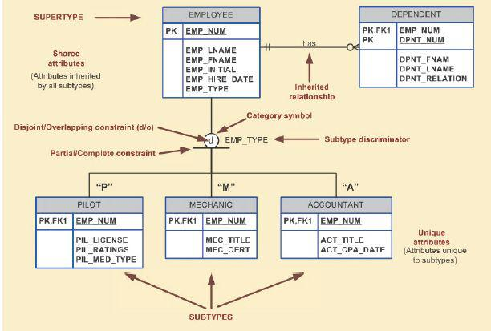
SOURCE: Course Technology/Cengage Learning
The property of inheritance enables an entity subtype to inherit the attributes and relationships of the supertype. As discussed earlier, a supertype contains attributes that are common to all of its subtypes. In contrast, subtypes contain only the attributes that are unique to the subtype. For example, Figure 5.2 illustrates that pilots, mechanics, and accountants all inherit the employee number, last name, first name, middle initial, and hire date from the EMPLOYEE entity. However, Figure 5.2 also illustrates that pilots have unique attributes; the same is true for mechanics and accountants. One important inheritance characteristic is that all entity subtypes inherit their primary key attribute from their supertype. Note in Figure 5.2 that the EMP_NUM attribute is the primary key for each of the subtypes.
At the implementation level, the supertype and its subtype(s) depicted in the specialization hierarchy maintain a 1:1 relationship. For example, the specialization hierarchy lets you replace the undesirable EMPLOYEE table structure in Figure 5.1 with two tables—one representing the supertype EMPLOYEE and the other representing the subtype PILOT. (See Figure 5.3.)
Entity subtypes inherit all relationships in which the supertype entity participates. For example, Figure 5.2 shows the EMPLOYEE entity supertype participating in a 1:M relationship with a DEPENDENT entity. Through inheritance, all subtypes also participate in that relationship. In specialization hierarchies with multiple levels of supertype and subtypes, a lower-level subtype inherits all of the attributes and relationships from all of its upper-level supertypes.
FIGURE 5.3 The EMPLOYEE-PILOT supertype-subtype relationship
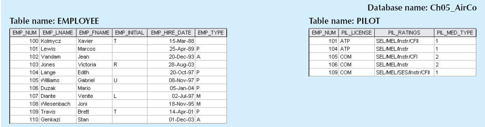
SOURCE: Course Technology/Cengage Learning
A subtype discriminator is the attribute in the supertype entity that determines to which subtype the supertype occurrence is related. In Figure 5.2, the subtype discriminator is the employee type (EMP_TYPE).
It is common practice to show the subtype discriminator and its value for each subtype in the ER diagram, as shown in Figure 5.2. However, not all ER modeling tools follow that practice. For example, MS Visio shows the subtype discriminator but not its value. In Figure 5.2, the Visio text tool was used to manually add the discriminator value above the entity subtype, close to the connector line. Using Figure 5.2 as your guide, note that the supertype is related to a PILOT subtype if the EMP_TYPE has a value of “P.” If the EMP_TYPE value is “M,” the supertype is related to a MECHANIC subtype. If the EMP_TYPE value is “A,” the supertype is related to the ACCOUNTANT subtype.
Note that the default comparison condition for the subtype discriminator attribute is the equality comparison. However, in some situations the subtype discriminator is not necessarily based on an equality comparison. For example, based on business requirements, you might create two new pilot subtypes: pilot-in-command (PIC)-qualified and copilot-qualified only. A PIC-qualified pilot must have more than 1,500 PIC flight hours. In this case, the subtype discriminator would be “Flight_Hours,” and the criteria would be > 1,500 or <= 1,500, respectively.
NOTE
In Visio, you select the subtype discriminator when creating a category by using the Category shape from the available shapes. The Category shape is a small circle with a horizontal line underneath that connects the supertype to its subtypes.
ONLINE CONTENT
For a tutorial on using MS Visio to create a specialization hierarchy, see Appendix A, Designing Databases with Visio Professional: A Tutorial, at www.cengagebrain.com.
5.1.5 DISJOINT AND OVERLAPPING CONSTRAINTS
An entity supertype can have disjoint or overlapping entity subtypes. In the aviation example, an employee can be a pilot, a mechanic, or an accountant. Assume that one of the business rules dictates that an employee cannot belong to more than one subtype at a time; that is, an employee cannot be a pilot and a mechanic at the same time. Disjoint subtypes, also known as nonoverlapping subtypes, are subtypes that contain a unique subset of the supertype entity set; in other words, each entity instance of the supertype can appear in only one of the subtypes. For example, in Figure 5.2, an employee (supertype) who is a pilot (subtype) can appear only in the PILOT subtype, not in any of the other subtypes. In Visio, such disjoint subtypes are indicated by the letter d inside the category shape.
On the other hand, if the business rule specifies that employees can have multiple classifications, the EMPLOYEE supertype may contain overlapping job classification subtypes. Overlapping subtypes are subtypes that contain nonunique subsets of the supertype entity set; that is, each entity instance of the supertype may appear in more than one subtype. For example, in a university environment, a person may be an employee, a student, or both. In turn, an employee may be a professor as well as an administrator. Because an employee may also be a student, STUDENT and EMPLOYEE are overlapping subtypes of the supertype PERSON, just as PROFESSOR and ADMINISTRATOR are overlapping subtypes of the supertype EMPLOYEE. Figure 5.4 illustrates overlapping subtypes with the letter o inside the category shape.
FIGURE 5.4 Specialization hierarchy with overlapping subtypes
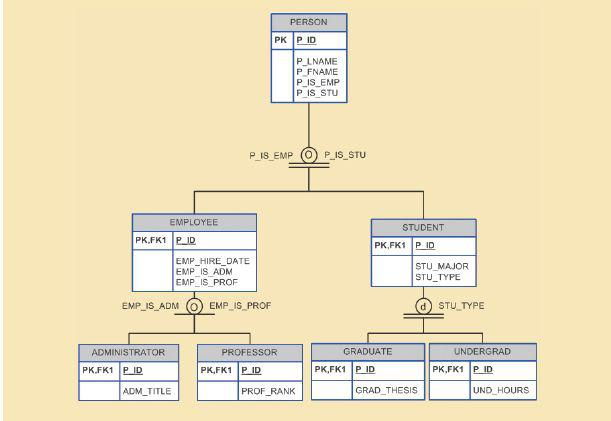
SOURCE: Course Technology/Cengage Learning
It is common practice to show disjoint and overlapping symbols in the ERD. (See Figures 5.2 and 5.4.) However, not all ER modeling tools follow that practice. For example, by default, Visio shows only the subtype discriminator (using the Category shape), but not the disjoint and overlapping symbols. The Visio text tool was used to manually add the d and o symbols in Figures 5.2 and 5.4.
NOTE
Alternative notations exist for representing disjoint and overlapping subtypes. For example, Toby J. Teorey popularized the use of G and Gs to indicate disjoint and overlapping subtypes.
TABLE 5.1 Discriminator Attributes with Overlapping Subtypes
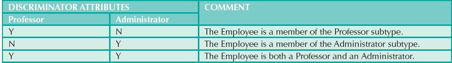
As you learned earlier in this section, the implementation of disjoint subtypes is based on the value of the subtype discriminator attribute in the supertype. However, implementing overlapping subtypes requires the use of one discriminator attribute for each subtype. For example, in the case of the Tiny College database design in Chapter 4, Entity Relationship (ER) Modeling, a professor can also be an administrator. Therefore, the EMPLOYEE supertype would have the subtype discriminator attributes and values shown in Table 5.1.
The completeness constraint specifies whether each entity supertype occurrence must also be a member of at least one subtype. The completeness constraint can be partial or total. Partial completeness means that not every supertype occurrence is a member of a subtype; some supertype occurrences may not be members of any subtype. Total completeness means that every supertype occurrence must be a member of at least one subtype.
The ERDs in Figures 5.2 and 5.4 represent the completeness constraint based on the Visio Category shape. A single horizontal line under the circle represents a partial completeness constraint; a double horizontal line under the circle represents a total completeness constraint.
NOTE
Alternative notations exist to represent the completeness constraint. For example, some notations use a single line (partial) or double line (total) to connect the supertype to the Category shape.
Given the disjoint and overlapping subtypes and completeness constraints, it is possible to have the specialization hierarchy constraint scenarios shown in Table 5.2.
TABLE 5.2 Specialization Hierarchy Constraint Scenarios
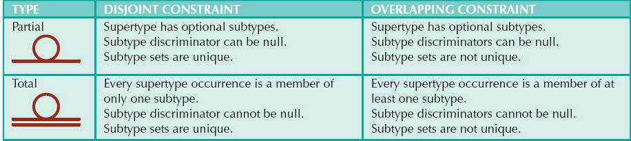
5.1.7 SPECIALIZATION AND GENERALIZATION
You can use various approaches to develop entity supertypes and subtypes. For example, you can first identify a regular entity, and then identify all entity subtypes based on their distinguishing characteristics. You can also start by identifying multiple entity types and then later extract the common characteristics of those entities to create a higherlevel supertype entity.
Specialization is the top-down process of identifying lower-level, more specific entity subtypes from a higher-level entity supertype. Specialization is based on grouping the unique characteristics and relationships of the subtypes. In the aviation example, you used specialization to identify multiple entity subtypes from the original employee supertype. Generalization is the bottom-up process of identifying a higher-level, more generic entity supertype from lower-level entity subtypes. Generalization is based on grouping the common characteristics and relationships of the subtypes. For example, you might identify multiple types of musical instruments: piano, violin, and guitar. Using the generalization approach, you could identify a “string instrument” entity supertype to hold the common characteristics of the multiple subtypes.
Developing an ER diagram entails the discovery of possibly hundreds of entity types and their respective relationships. Generally, the data modeler will develop an initial ERD that contains a few entities. As the design approaches completion, the ERD will contain hundreds of entities and relationships that crowd the diagram to the point of making it unreadable and inefficient as a communication tool. In those cases, you can use entity clusters to minimize the number of entities shown in the ERD.
An entity cluster is a “virtual” entity type used to represent multiple entities and relationships in the ERD. An entity cluster is formed by combining multiple interrelated entities into a single, abstract entity object. An entity cluster is considered “virtual” or “abstract” in the sense that it is not actually an entity in the final ERD. Instead, it is a temporary entity used to represent multiple entities and relationships, with the purpose of simplifying the ERD and thus enhancing its readability.
Figure 5.5 illustrates the use of entity clusters based on the Tiny College example in Chapter 4. Note that the ERD contains two entity clusters:
• OFFERING, which groups the COURSE and CLASS entities and relationships.
• LOCATION, which groups the ROOM and BUILDING entities and relationships.
Note also that the ERD in Figure 5.5 does not show attributes for the entities. When using entity clusters, the key attributes of the combined entities are no longer available. Without the key attributes, primary key inheritance rules change. In turn, the change in the inheritance rules can have undesirable consequences, such as changes in relationships—from identifying to nonidentifying or vice versa—and the loss of foreign key attributes from some entities. To eliminate those problems, the general rule is to avoid the display of attributes when entity clusters are used.
FIGURE 5.5 Tiny College ERD using entity clusters
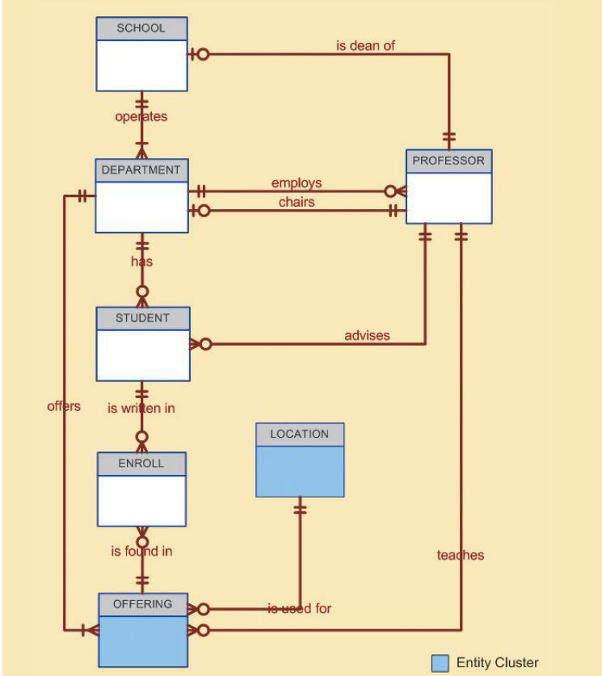
SOURCE: Course Technology/Cengage Learning
5.3 ENTITY INTEGRITY: SELECTING PRIMARY KEYS
Arguably, the most important characteristic of an entity is its primary key (a single attribute or some combination of attributes), which uniquely identifies each entity instance. The primary key’s function is to guarantee entity integrity. Furthermore, primary keys and foreign keys work together to implement relationships in the relational model. Therefore, the importance of properly selecting the primary key has a direct bearing on the efficiency and effectiveness of database implementation.
5.3.1 NATURAL KEYS AND PRIMARY KEYS
The concept of a unique identifier is commonly encountered in the real world. For example, you use class or section numbers to register for classes, invoice numbers to identify specific invoices, and account numbers to identify credit cards. Those examples illustrate natural identifiers or keys. A natural key or natural identifier is a real-world, generally accepted identifier used to distinguish—that is, uniquely identify—real-world objects. As its name implies, a natural key is familiar to end users and forms part of their day-to-day business vocabulary.
Usually, if an entity has a natural identifier, a data modeler uses it as the primary key of the entity being modeled. Generally, most natural keys make acceptable primary key identifiers. The next section presents some basic guidelines for selecting primary keys.
A primary key is the attribute or combination of attributes that uniquely identifies entity instances in an entity set. However, can the primary key be based on, say, 12 attributes? And just how long can a primary key be? In previous examples, why was EMP_NUM selected as a primary key of EMPLOYEE and not a combination of EMP_LNAME, EMP_FNAME, EMP_INITIAL, and EMP_DOB? Can a single, 256-byte text attribute be a good primary key? There is no single answer to those questions, but database experts have built a body of practice over the years. This section examines that body of documented practices.
First, you should understand the function of a primary key. Its main function is to uniquely identify an entity instance or row within a table. In particular, given a primary key value—that is, the determinant—the relational model can determine the value of all dependent attributes that “describe” the entity. Note that identification and description are separate semantic constructs in the model. The function of the primary key is to guarantee entity integrity, not to “describe” the entity.
Second, primary keys and foreign keys are used to implement relationships among entities. However, the implementation of such relationships is done mostly behind the scenes, hidden from end users. In the real world, end users identify objects based on the characteristics they know about the objects. For example, when shopping at a grocery store, you select products by taking them from a display shelf and reading the labels, not by looking at the stock number. It is wise for database applications to mimic the human selection process as much as possible. Therefore, database applications should let the end user choose among multiple descriptive narratives of different objects, while using primary key values behind the scenes. Keeping those concepts in mind, look at Table 5.3, which summarizes desirable primary key characteristics.
5.3.3 WHEN TO USE COMPOSITE PRIMARY KEYS
In the previous section, you learned about the desirable characteristics of primary keys. For example, you learned that the primary key should use the minimum number of attributes possible. However, that does not mean that composite primary keys are not permitted in a model. In fact, composite primary keys are particularly useful in two cases:
• As identifiers of composite entities, in which each primary key combination is allowed only once in the M:N relationship.
• As identifiers of weak entities, in which the weak entity has a strong identifying relationship with the parent entity.
To illustrate the first case, assume that you have a STUDENT entity set and a CLASS entity set. In addition, assume that those two sets are related in an M:N relationship via an ENROLL entity set, in which each student/class combination may appear only once in the composite entity. Figure 5.6 shows the ERD to represent such a relationship.
As shown in Figure 5.6, the composite primary key automatically provides the benefit of ensuring that there cannot be duplicate values—that is, it ensures that the same student cannot enroll more than once in the same class.
TABLE 5.3 Desirable Primary Key Characteristics
PK CHARACTERISTIC | RATIONALE |
Unique values | The PK must uniquely identify each entity instance. A primary key must be able to guarantee unique values. It cannot contain nulls. |
Nonintelligent | The PK should not have embedded semantic meaning other than to uniquely identify each entity instance. An attribute with embedded semantic meaning is probably better used as a descriptive characteristic of the entity than as an identifier. For example, a student ID of 650973 would be preferred over Smith, Martha L. as a primary key identifier. |
No change over time | If an attribute has semantic meaning, it might be subject to updates, which is why names do not make good primary keys. If Vickie Smith is the primary key, what happens if she changes her name when she gets married? If a primary key is subject to change, the foreign key values must be updated, thus adding to the database work load. Furthermore, changing a primary key value means that you are basically changing the identity of an entity. In short, the PK should be permanent and unchangeable. |
Preferably single-attribute | A primary key should have the minimum number of attributes possible (irreducible). Single-attribute primary keys are desirable but not required. Single-attribute primary keys simplify the implementation of foreign keys. Having multipleattribute primary keys can cause primary keys of related entities to grow through the possible addition of many attributes, thus adding to the database work load and making (application) coding more cumbersome. |
Preferably numeric | Unique values can be better managed when they are numeric, because the database can use internal routines to implement a counter-style attribute that automatically increments values with the addition of each new row. In fact, most database systems include the ability to use special constructs, such as Autonumber in Microsoft Access, to support self-incrementing primary key attributes. |
Security-compliant | The selected primary key must not be composed of any attribute(s) that might be considered a security risk or violation. For example, using a Social Security number as a PK in an EMPLOYEE table is not a good idea. |
In the second case, a weak entity in a strong identifying relationship with a parent entity is normally used to represent one of two situations:
1. A real-world object that is existence-dependent on another real-world object. Such objects are distinguishable in the real world. A dependent and an employee are two separate people who exist independently of each other. However, such objects can exist in the model only when they relate to each other in a strong identifying relationship. For example, the relationship between EMPLOYEE and DEPENDENT is one of existence dependency, in which the primary key of the dependent entity is a composite key that contains the key of the parent entity.
2. A real-world object that is represented in the data model as two separate entities in a strong identifying relationship. For example, the real-world invoice object is represented by two entities in a data model: INVOICE and LINE. Clearly, the LINE entity does not exist in the real world as an independent object, but as part of an INVOICE.
In both situations, having a strong identifying relationship ensures that the dependent entity can exist only when it is related to the parent entity. In summary, the selection of a composite primary key for composite and weak entity types provides benefits that enhance the integrity and consistency of the model.
FIGURE 5.6 The M:N relationship between STUDENT and CLASS
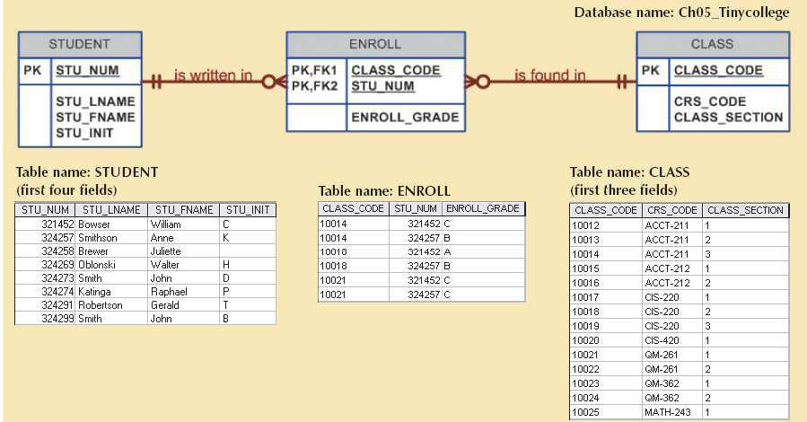
SOURCE: Course Technology/Cengage Learning
5.3.4 WHEN TO USE SURROGATE PRIMARY KEYS
In some instances a primary key doesn’t exist in the real world or the existing natural key might not be a suitable primary key. In these cases, it is standard practice to create a surrogate key. A surrogate key is a primary key created by the database designer to simplify the identification of entity instances. The surrogate key has no meaning in the user’s environment—it exists only to distinguish one entity instance from another. One practical advantage of a surrogate key is that because it has no intrinsic meaning, values for it can be generated by the DBMS to ensure that unique values are always provided.
For example, consider the case of a park recreation facility that rents rooms for small parties. The manager of the facility keeps track of all events, using a folder with the format shown in Table 5.4.
TABLE 5.4 Data Used to Keep Track of Events
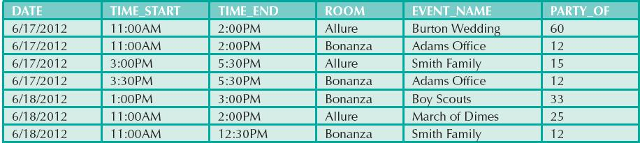
Given the data shown in Table 5.4, you would model the EVENT entity as:
EVENT (DATE, TIME_START, TIME_END, ROOM, EVENT_NAME, PARTY_OF)
What primary key would you suggest? In this case, there is no simple natural key that could be used as a primary key in the model. Based on the primary key concepts you learned in previous chapters, you might suggest one of these options:
(DATE, TIME_START, ROOM) or (DATE, TIME_END, ROOM)
Assume that you select the composite primary key (DATE, TIME_START, ROOM) for the EVENT entity. Next, you determine that one EVENT may use many RESOURCEs (such as tables, projectors, PCs, and stands), and that the same RESOURCE may be used for many EVENTs. The RESOURCE entity would be represented by the following attributes:
RESOURCE (RSC_ID, RSC_DESCRIPTION, RSC_TYPE, RSC_QTY, RSC_PRICE)
Given the business rules, the M:N relationship between RESOURCE and EVENT would be represented via the EVNTRSC composite entity with a composite primary key as follows:
EVNTRSC (DATE, TIME_START, ROOM, RSC_ID, QTY_USED)
You now have a lengthy, four-attribute composite primary key. What would happen if the EVNTRSC entity’s primary key were inherited by another existence-dependent entity? At this point, you can see that the composite primary key could make the database implementation and program coding unnecessarily complex.
As a data modeler, you probably noticed that the EVENT entity’s selected primary key might not fare well, given the primary key guidelines in Table 5.3. In this case, the EVENT entity’s selected primary key contains embedded semantic information and is formed by a combination of date, time, and text data columns. In addition, the selected primary key would cause lengthy primary keys for existence-dependent entities. The preferred alternative is to use a numeric, single-attribute surrogate primary key.
Surrogate primary keys are accepted practice in today’s complex data environments. They are especially helpful when there is no natural key, when the selected candidate key has embedded semantic contents, or when the selected candidate key is too long or cumbersome. However, there is a trade-off: if you use a surrogate key, you must ensure that the candidate key of the entity in question performs properly through the use of “unique index” and “not null” constraints.
5.4 DESIGN CASES: LEARNING FLEXIBLE DATABASE DESIGN
Data modeling and database design require skills that are acquired through experience. In turn, experience is acquired through practice—regular and frequent repetition, applying the concepts learned to specific and different design problems. This section presents four special design cases that highlight the importance of flexible designs, proper identification of primary keys, and placement of foreign keys.
NOTE
In describing the various modeling concepts throughout this book, the focus is on relational models. Also, given the focus on the practical nature of database design, all design issues are addressed with the implementation goal in mind. Therefore, there is no sharp line of demarcation between design and implementation.
At the pure conceptual stage of the design, foreign keys are not part of an ER diagram. The ERD displays only entities and relationships. Entity instances are distinguished by identifiers that may become primary keys. During design, the modeler attempts to understand and define the entities and relationships. Foreign keys are the mechanism through which the relationship designed in an ERD is implemented in a relational model. If you use Visio Professional as your modeling tool, you will discover that this book’s methodology is reflected in the Visio modeling practice.
5.4.1 DESIGN CASE 1: IMPLEMENTING 1:1 RELATIONSHIPS
Foreign keys work with primary keys to properly implement relationships in the relational model. The basic rule is very simple: put the primary key of the “one” side (the parent entity) on the “many” side (the dependent entity) as a foreign key. However, where do you place the foreign key when you are working with a 1:1 relationship? For example, take the case of a 1:1 relationship between EMPLOYEE and DEPARTMENT based on the business rule “one EMPLOYEE is the manager of one DEPARTMENT, and one DEPARTMENT is managed by one EMPLOYEE.” In that case, there are two options for selecting and placing the foreign key:
1. Place a foreign key in both entities. This option is derived from the basic rule you learned in Chapter 4. Place EMP_NUM as a foreign key in DEPARTMENT, and place DEPT_ID as a foreign key in EMPLOYEE. However, this solution is not recommended because it duplicates work, and it could conflict with other existing relationships. (Remember that DEPARTMENT and EMPLOYEE also participate in a 1:M relationship—one department employs many employees.)
2. Place a foreign key in one of the entities. In that case, the primary key of one of the two entities appears as a foreign key in the other entity. That is the preferred solution, but a question remains: which primary key should be used as a foreign key? The answer is found in Table 5.5, which shows the rationale for selecting the foreign key in a 1:1 relationship based on the relationship properties in the ERD.
TABLE 5.5 Selection of Foreign Key in a 1:1 Relationship
CASE | ER RELATIONSHIP CONSTRAINTS | ACTION |
I | One side is mandatory and the other side is optional. | Place the PK of the entity on the mandatory side in the entity on the optional side as a FK, and make the FK mandatory. |
II | Both sides are optional. | Select the FK that causes the fewest nulls, or place the FK in the entity in which the (relationship) role is played. |
III | Both sides are mandatory. | See Case II, or consider revising your model to ensure that the two entities do not belong together in a single entity. |
Figure 5.7 illustrates the “EMPLOYEE manages DEPARTMENT” relationship. Note that in this case, EMPLOYEE is mandatory to DEPARTMENT. Therefore, EMP_NUM is placed as the foreign key in DEPARTMENT. Alternatively, you might also argue that the “manager” role is played by the EMPLOYEE in the DEPARTMENT.
FIGURE 5.7 The 1:1 relationship between DEPARTMENT and EMPLOYEE
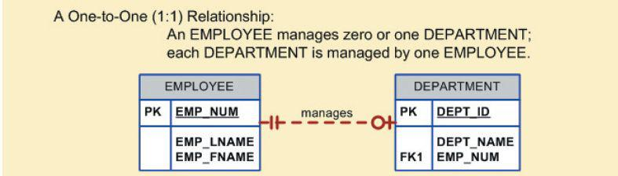
SOURCE: Course Technology/Cengage Learning
As a designer, you must recognize that 1:1 relationships exist in the real world; therefore, they should be supported in the data model. In fact, a 1:1 relationship is used to ensure that two entity sets are not placed in the same table. In other words, EMPLOYEE and DEPARTMENT are clearly separate and unique entity types that do not belong together in a single entity. If you grouped them together in one entity, what would you name that entity?
5.4.2 DESIGN CASE 2: MAINTAINING HISTORY OF TIME-VARIANT DATA
Company managers generally realize that good decision making is based on the information generated through the data stored in databases. Such data reflect both current and past events. Company managers use the data stored in databases to answer questions such as: “How do the current company profits compare to those of previous years?” and “What are XYZ product’s sales trends?” In other words, the data stored in databases reflect not only current data, but historic data.
Normally, data changes are managed by replacing the existing attribute value with the new value, without regard to the previous value. However, in some situations the history of values for a given attribute must be preserved. From a data-modeling point of view, time-variant data refer to data whose values change over time and for which you must keep a history of the data changes. You could argue that all data in a database are subject to change over time and are therefore time variant. However, some attribute values, such as your date of birth or your Social Security number, are not time variant. On the other hand, attributes such as your student GPA or your bank account balance are subject to change over time. Sometimes the data changes are externally originated and event driven, such as a product price change. On other occasions, changes are based on well-defined schedules, such as the daily stock quote “open” and “close” values.
The storage of time-variant data requires changes in the data model; the type of change depends on the nature of the data. Some time-variant data is equivalent to having a multivalued attribute in your entity. To model this type of timevariant data, you must create a new entity in a 1:M relationship with the original entity. This new entity will contain the new value, the date of the change, and any other attribute that is pertinent to the event being modeled. For example, if you want to track salary histories for each employee, then the EMP_SALARY attribute becomes multivalued, as shown in Figure 5.8. In this case, for each employee, there will be one or more records in the SALARY_HIST entity, which stores the salary amount and the date when the new salary goes into effect.
FIGURE 5.8 Maintaining salary history
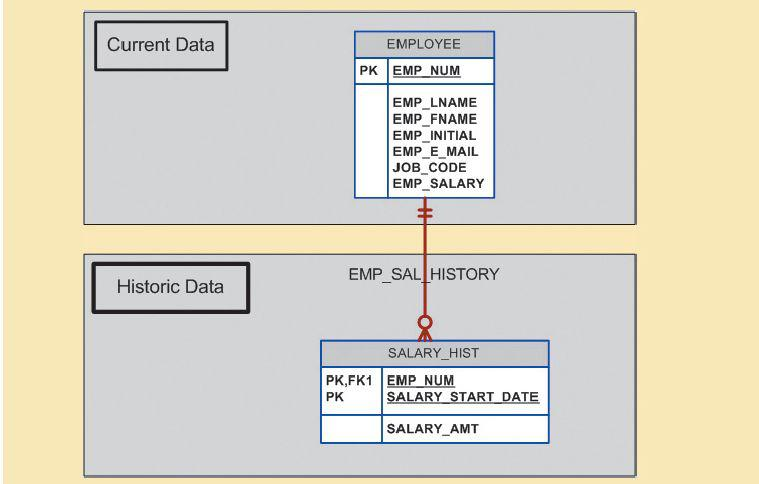
SOURCE: Course Technology/Cengage Learning
Other time-variant data can turn a 1:M relationship into an M:N relationship. Assume that in addition to employee data, your data model includes data about the different departments in the organization and which employee manages each department. Assuming that each department is managed by only one employee and each employee can manage one department at most, then a 1:1 relationship would exist between EMPLOYEE and DEPARTMENT. This relationship would record the current manager of each department. However, if you want to keep track of the history of all department managers as well as the current manager, you can create the model shown in Figure 5.9.
FIGURE 5.9 Maintaining manager history
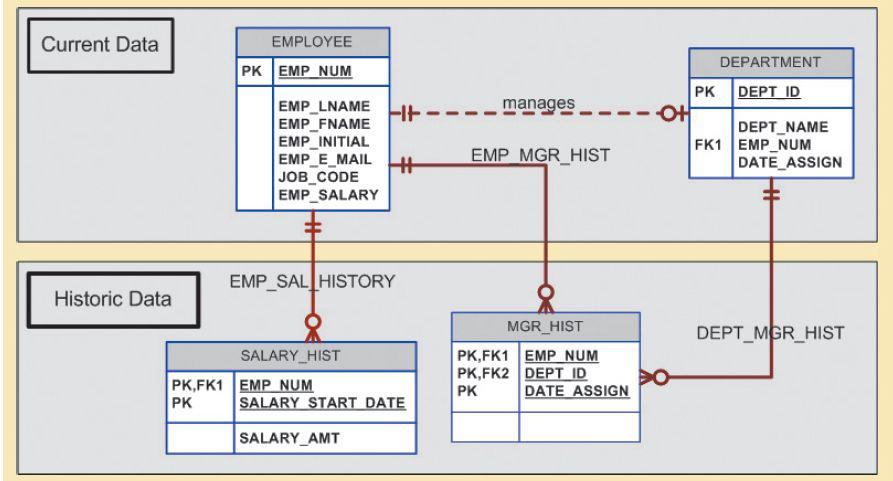
SOURCE: Course Technology/Cengage Learning
Note that in Figure 5.9, the MGR_HIST entity has a 1:M relationship with EMPLOYEE and a 1:M relationship with DEPARTMENT to reflect the fact that an employee could be the manager of many different departments over time, and a department could have many different employee managers. Because you are recording time-variant data, you must store the DATE_ASSIGN attribute in the MGR_HIST entity to provide the date that the employee (EMP_NUM) became the department manager. The primary key of MGR_HIST permits the same employee to be the manager of the same department, but on different dates. If that scenario is not the case in your environment—if, for example, an employee is the manager of a department only once—you could make DATE_ASSIGN a nonprime attribute in the MGR_HIST entity.
Note in Figure 5.9 that the “manages” relationship is optional in theory and redundant in practice. At any time, you could identify the manager of a department by retrieving the most recent DATE_ASSIGN date from MGR_HIST for a given department. On the other hand, the ERD in Figure 5.9 differentiates between current data and historic data. The current manager relationship is implemented by the “manages” relationship between EMPLOYEE and DEPARTMENT. Additionally, the historic data are managed through EMP_MGR_HIST and DEPT_MGR_HIST. The trade-off with that model is that each time a new manager is assigned to a department, there will be two data modifications: one update in the DEPARTMENT entity and one insert in the MGR_HIST entity.
The flexibility of the model proposed in Figure 5.9 becomes more apparent when you add the 1:M “one department employs many employees” relationship. In that case, the PK of the “1” side (DEPT_ID) appears in the “many” side (EMPLOYEE) as a foreign key. Now suppose you would like to keep track of the job history for each of the company’s employees—you’d probably want to store the department, the job code, the date assigned, and the salary. To accomplish that task, you could modify the model in Figure 5.9 by adding a JOB_HIST entity. Figure 5.10 shows the use of the new JOB_HIST entity to maintain the employee’s history.
FIGURE 5.10 Maintaining job history
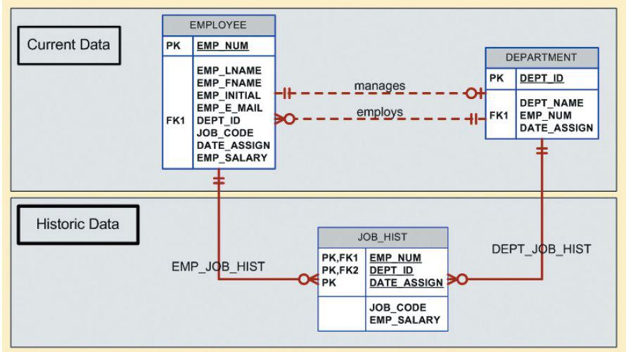
SOURCE: Course Technology/Cengage Learning
Again, it is worth emphasizing that the “manages” and “employs” relationships are theoretically optional and redundant in practice. You can always find out where each employee works by looking at the job history and selecting only the most current data row for each employee. However, as you will discover in Chapter 7, Introduction to Structured Query Language (SQL), and in Chapter 8, Advanced SQL, finding where each employee works is not a trivial task. Therefore, the model represented in Figure 5.10 includes the admittedly redundant but unquestionably useful “manages” and “employs” relationships to separate current data from historic data.
5.4.3 DESIGN CASE 3: FAN TRAPS
Creating a data model requires proper identification of the data relationships among entities. However, due to miscommunication or incomplete understanding of the business rules or processes, it is not uncommon to misidentify relationships among entities. Under those circumstances, the ERD may contain a design trap. A design trap occurs when a relationship is improperly or incompletely identified and is therefore represented in a way that is not consistent with the real world. The most common design trap is known as a fan trap.
A fan trap occurs when you have one entity in two 1:M relationships to other entities, thus producing an association among the other entities that is not expressed in the model. For example, assume that the JCB basketball league has many divisions. Each division has many players, and each division has many teams. Given those “incomplete” business rules, you might create an ERD that looks like the one in Figure 5.11.
As you can see in Figure 5.11, DIVISION is in a 1:M relationship with TEAM and in a 1:M relationship with PLAYER. Although that representation is semantically correct, the relationships are not properly identified. For example, there is no way to identify which players belong to which team. Figure 5.11 also shows a sample instance relationship representation for the ERD. Note that the relationship lines for the DIVISION instances fan out to the TEAM and PLAYER entity instances—thus the “fan trap” label.
FIGURE 5.11 Incorrect ERD with fan trap problem
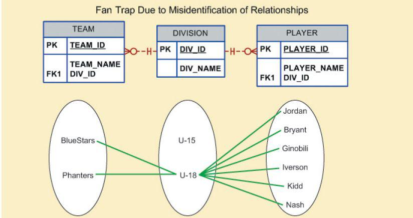
SOURCE: Course Technology/Cengage Learning
Figure 5.12 shows the correct ERD after the fan trap has been eliminated. Note that, in this case, DIVISION is in a 1:M relationship with TEAM. In turn, TEAM is in a 1:M relationship with PLAYER. Figure 5.12 also shows the instance relationship representation after eliminating the fan trap.
FIGURE 5.12 Corrected ERD after removal of the fan trap
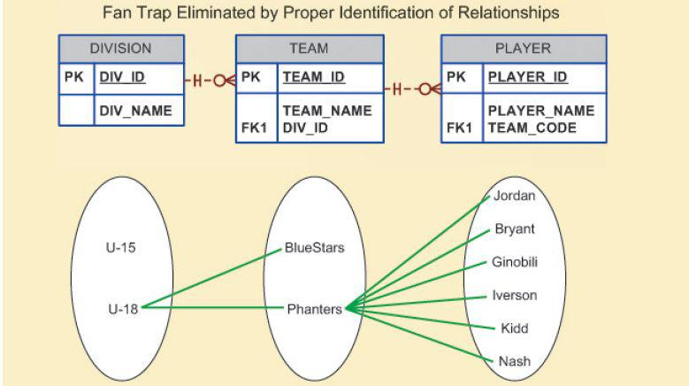
SOURCE: Course Technology/Cengage Learning
Given the design in Figure 5.12, note how easy it is to see which players play for which team. However, to find out which players play in which division, you first need to see what teams belong to each division; then you need to find out which players play on each team. In other words, there is a transitive relationship between DIVISION and PLAYER via the TEAM entity.
5.4.4 DESIGN CASE 4: REDUNDANT RELATIONSHIPS
Although redundancy is often good to have in computer environments (multiple backups in multiple places, for example), redundancy is seldom good in the database environment. (As you learned in Chapter 3, The Relational Database Model, redundancies can cause data anomalies in a database.) Redundant relationships occur when there are multiple relationship paths between related entities. The main concern with redundant relationships is that they remain consistent across the model. However, it is important to note that some designs use redundant relationships as a way to simplify the design.
An example of redundant relationships was first introduced in Figure 5.9 during the discussion of maintaining a history of time-variant data. However, the use of the redundant “manages” and “employs” relationships was justified by the fact that such relationships dealt with current data rather than historic data. Another more specific example of a redundant relationship is represented in Figure 5.13.
FIGURE 5.13 A redundant relationship
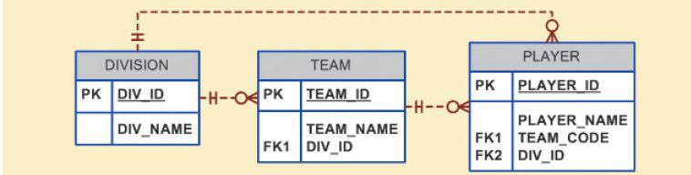
SOURCE: Course Technology/Cengage Learning
In Figure 5.13, note the transitive 1:M relationship between DIVISION and PLAYER through the TEAM entity set. Therefore, the relationship that connects DIVISION and PLAYER is redundant, for all practical purposes. In that case, the relationship could be safely deleted without losing any information-generation capabilities in the model.
The extended entity relationship (EER) model adds semantics to the ER model via entity supertypes, subtypes, and clusters. An entity supertype is a generic entity type that is related to one or more entity subtypes.
A specialization hierarchy depicts the arrangement and relationships between entity supertypes and entity subtypes. Inheritance means that an entity subtype inherits the attributes and relationships of the supertype. Subtypes can be disjoint or overlapping. A subtype discriminator is used to determine to which entity subtype the supertype occurrence is related. The subtypes can exhibit partial or total completeness. There are basically two approaches to developing a specialization hierarchy of entity supertypes and subtypes: specialization and generalization.
An entity cluster is a “virtual” entity type used to represent multiple entities and relationships in the ERD. An entity cluster is formed by combining multiple interrelated entities and relationships into a single, abstract entity object.
Natural keys are identifiers that exist in the real world. Natural keys sometimes make good primary keys, but not always. Primary keys must have unique values, they should be nonintelligent, they must not change over time, and they are preferably numeric and composed of a single attribute.
Composite keys are useful to represent M:N relationships and weak (strong identifying) entities.
Surrogate primary keys are useful when there is no natural key that makes a suitable primary key, when the primary key is a composite primary key with multiple data types, or when the primary key is too long to be usable.
In a 1:1 relationship, place the PK of the mandatory entity as a foreign key in the optional entity, as an FK in the entity that causes the fewest nulls, or as an FK where the role is played.
Time-variant data refer to data whose values change over time and require that you keep a history of data changes. To maintain the history of time-variant data, you must create an entity that contains the new value, the date of change, and any other time-relevant data. This entity maintains a 1:M relationship with the entity for which the history is to be maintained.
A fan trap occurs when you have one entity in two 1:M relationships to other entities, and there is an association among the other entities that is not expressed in the model. Redundant relationships occur when there are multiple relationship paths between related entities. The main concern with redundant relationships is that they remain consistent across the model.
ONLINE CONTENT
Flashcards and crossword puzzles for key term practice are available at www.cengagebrain.com.
1. What is an entity supertype, and why is it used?
2. What kinds of data would you store in an entity subtype?
3. What is a specialization hierarchy?
4. What is a subtype discriminator? Give an example of its use.
5. What is an overlapping subtype? Give an example.
6. What is the difference between partial completeness and total completeness?
For Questions 7–9, refer to Figure Q5.7.
FIGURE Q5.7 The PRODUCT data model
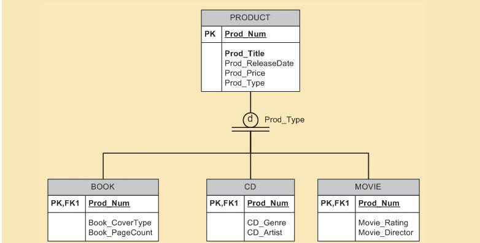
SOURCE: Course Technology/Cengage Learning
7. List all of the attributes of a movie.
8. According to the data model, is it required that every entity instance in the PRODUCT table be associated with an entity instance in the CD table? Why, or why not?
9. Is it possible for a book to appear in the BOOK table without appearing in the PRODUCT table? Why, or why not?
10. What is an entity cluster, and what advantages are derived from its use?
11. What primary key characteristics are considered desirable? Explain why each characteristic is considered desirable.
12. Under what circumstances are composite primary keys appropriate?
13. What is a surrogate primary key, and when would you use one?
14. When implementing a 1:1 relationship, where should you place the foreign key if one side is mandatory and one side is optional? Should the foreign key be mandatory or optional?
15. What are time-variant data, and how would you deal with such data from a database design point of view?
16. What is the most common design trap, and how does it occur?
1. Given the following business scenario, create a Crow’s Foot ERD using a specialization hierarchy if appropriate. Two-Bit Drilling Company keeps information on employees and their insurance dependents. Each employee has an employee number, name, date of hire, and title. If an employee is an inspector, then the date of certification and certification renewal date should also be recorded in the system. For all employees, the Social Security number and dependent names should be kept. All dependents must be associated with one and only one employee. Some employees will not have dependents, while others will have many dependents.
2. Given the following business scenario, create a Crow’s Foot ERD using a specialization hierarchy if appropriate. Tiny Hospital keeps information on patients and hospital rooms. The system assigns each patient a patient ID number. In addition, the patient’s name and date of birth are recorded. Some patients are resident patients who spend at least one night in the hospital, and others are outpatients who are treated and released. Resident patients are assigned to a room. Each room is identified by a room number. The system also stores the room type (private or semiprivate) and room fee. Over time, each room will have many patients. Each resident patient will stay in only one room. Every room must have had a patient, and every resident patient must have a room.
3. Given the following business scenario, create a Crow’s Foot ERD using a specialization hierarchy if appropriate. Granite Sales Company keeps information on employees and the departments in which they work. For each department, the department name, internal mail box number, and office phone extension are kept. A department can have many assigned employees, and each employee is assigned to only one department. Employees can be salaried, hourly, or work on contract. All employees are assigned an employee number, which is kept along with the employee’s name and address. For hourly employees, hourly wages and target weekly work hours are stored; for example, the company may target 40 hours/week for some employees, 32 for others, and 20 for others. Some salaried employees are salespeople who can earn a commission in addition to their base salary. For all salaried employees, the yearly salary amount is recorded in the system. For salespeople, their commission percentage on sales and commission percentage on profit are stored in the system. For example, John is a salesperson with a base salary of $50,000 per year plus 2 percent commission on the sales price for all sales he makes, plus another 5 percent of the profit on each of those sales. For contract employees, the beginning date and end date of their contracts are stored along with the billing rate for their hours.
4. In Chapter 4, you saw the creation of the Tiny College database design, which reflected such business rules as “a professor may advise many students” and “a professor may chair one department.” Modify the design shown in Figure 4.36 to include these business rules:
• An employee could be staff, a professor, or an administrator.
• A professor may also be an administrator.
• Staff employees have a work-level classification, such as Level I or Level II.
• Only professors can chair a department. A department is chaired by only one professor.
• Only professors can serve as the dean of a college. Each of the university’s colleges is served by one dean.
• A professor can teach many classes.
• Administrators have a position title.
Given that information, create the complete ERD that contains all primary keys, foreign keys, and main attributes.
5. Tiny College wants to keep track of the history of all its administrative appointments, including dates of appointment and dates of termination. (Hint: Time-variant data are at work.) The Tiny College chancellor may want to know how many deans worked in the College of Business between January 1, 1960, and January 1, 2012, or who the dean of the College of Education was in 1990. Given that information, create the complete ERD that contains all primary keys, foreign keys, and main attributes.
6. Some Tiny College staff employees are information technology (IT) personnel. Some IT personnel provide technology support for academic programs, some provide technology infrastructure support, and some provide support for both. IT personnel are not professors; they are required to take periodic training to retain their technical expertise. Tiny College tracks all IT personnel training by date, type, and results (completed vs. not completed). Given that information, create the complete ERD that contains all primary keys, foreign keys, and main attributes.
7. The FlyRight Aircraft Maintenance (FRAM) division of the FlyRight Company (FRC) performs all maintenance for FRC’s aircraft. Produce a data model segment that reflects the following business rules:
• All mechanics are FRC employees. Not all employees are mechanics.
• Some mechanics are specialized in engine (EN) maintenance. Others are specialized in airframe (AF) maintenance or avionics (AV) maintenance. (Avionics are the electronic components of an aircraft that are used in communication and navigation.) All mechanics take periodic refresher courses to stay current in their areas of expertise. FRC tracks all courses taken by each mechanic—date, course type, certification (Y/N), and performance.
• FRC keeps an employment history of all mechanics. The history includes the date hired, date promoted, and date terminated.
Given those requirements, create the Crow’s Foot ERD segment.
8. “Martial Arts R Us” (MARU) needs a database. MARU is a martial arts school with hundreds of students. The database must keep track of all the classes that are offered, who is assigned to teach each class, and which students attend each class. Also, it is important to track the progress of each student as they advance. Create a complete Crow’s Foot ERD for these requirements:
• Students are given a student number when they join the school. The number is stored along with their name, date of birth, and the date they joined the school.
• All instructors are also students, but clearly not all students are instructors. In addition to the normal student information, for all instructors, the date that they start working as an instructor must be recorded along with their instructor status (compensated or volunteer).
• An instructor may be assigned to teach any number of classes, but each class has one and only one assigned instructor. Some instructors, especially volunteer instructors, may not be assigned to any class.
• A class is offered for a specific level at a specific time, day of the week, and location. For example, one class taught on Mondays at 5:00 p.m. in Room 1 is an intermediate-level class. Another class taught on Mondays at 6:00 p.m. in Room 1 is a beginner-level class. A third class taught on Tuesdays at 5:00 p.m. in Room 2 is an advanced-level class.
• Students may attend any class of the appropriate level during each week, so there is no expectation that any particular student will attend any particular class session. Therefore, the attendance of students at each individual class meeting must be tracked.
• A student will attend many different class meetings, and each class meeting is normally attended by many students. Some class meetings may not be attended by any students. New students may not have attended any class meetings yet.
• At any given meeting of a class, instructors other than the assigned instructor may show up to help. Therefore, a given class meeting may have a head instructor and many assistant instructors, but it will always have at least the one instructor who is assigned to that class. For each class meeting, the date of the class and the instructors’ roles (head instructor or assistant instructor) need to be recorded. For example, Mr. Jones is assigned to teach the Monday, 5:00 p.m., intermediate class in Room 1. During a particular meeting of that class, Mr. Jones was the head instructor and Ms. Chen served as an assistant instructor.
• Each student holds a rank in the martial arts. The rank name, belt color, and rank requirements are stored. Most ranks have numerous rank requirements, but each requirement is associated with only one particular rank. All ranks except white belt have at least one requirement.
• A given rank may be held by many students. While it is customary to think of a student as having a single rank, it is necessary to track each student’s progress through the ranks. Therefore, every rank that a student attains is kept in the system. New students joining the school are automatically given the rank of white belt. The date that a student is awarded each rank should be kept in the system. All ranks have at least one student who has achieved that rank at some time.
9. The Journal of E-commerce Research Knowledge is a prestigious information systems research journal. It uses a peer-review process to select manuscripts for publication. Only about 10 percent of the manuscripts submitted to the journal are accepted for publication. A new issue of the journal is published each quarter. Create a complete ERD to support the business needs described below.
• Unsolicited manuscripts are submitted by authors. When a manuscript is received, the editor assigns it a number and records some basic information about it in the system, including the title of the manuscript, the date it was received, and a manuscript status of “received.” Information about the author(s) is also recorded, including each author’s name, mailing address, e-mail address, and affiliation (the author’s school or company). Every manuscript must have an author. Only authors who have submitted manuscripts are kept in the system. It is typical for a manuscript to have several authors. A single author may have submitted many different manuscripts to the journal. Additionally, when a manuscript has multiple authors, it is important to record the order in which the authors are listed in the manuscript credits.
• At her earliest convenience, the editor will briefly review the topic of the manuscript to ensure that its contents fall within the scope of the journal. If the content is not appropriate for the journal, the manuscript’s status is changed to “rejected” and the author is notified via e-mail. If the content is within the scope of the journal, then the editor selects three or more reviewers to review the manuscript. Reviewers work for other companies or universities and read manuscripts to ensure their scientific validity. For each reviewer, the system records a reviewer number, name, e-mail address, affiliation, and areas of interest. Areas of interest are predefined areas of expertise that the reviewer has specified. An area of interest is identified by an IS code and includes a description (for example, IS2003 is the code for “database modeling”). A reviewer can have many areas of interest, and an area of interest can be associated with many reviewers. All reviewers must specify at least one area of interest. It is unusual, but possible, to have an area of interest for which the journal has no reviewers. The editor will change the status of the manuscript to “under review” and record which reviewers received the manuscript and the date it was sent to each reviewer. A reviewer will typically receive several manuscripts to review each year, although new reviewers may not have received any manuscripts yet.
• The reviewers will read the manuscript at their earliest convenience and provide feedback to the editor. The feedback from each reviewer includes rating the manuscript on a 10-point scale for appropriateness, clarity, methodology, and contribution to the field, as well as a recommendation for publication (accept or reject). The editor will record all of this information in the system for each review received, along with the date the feedback was received. Once all of the reviewers have provided their evaluations, the editor will decide whether to publish the manuscript and change its status to “accepted” or “rejected.” If the manuscript will be published, the date of acceptance is recorded.
• Once a manuscript has been accepted for publication, it must be scheduled. For each issue of the journal, the publication period (fall, winter, spring, or summer), publication year, volume, and number are recorded. An issue will contain many manuscripts, although the issue may be created in the system before it is known which manuscripts will be published in that issue. An accepted manuscript appears in only one issue of the journal. Each manuscript goes through a typesetting process that formats the content, including fonts, font size, line spacing, justification, and so on. Once the manuscript has been typeset, its number of pages is recorded in the system. The editor will then decide which issue each accepted manuscript will appear in and the order of manuscripts within each issue. The order and the beginning page number for each manuscript must be stored in the system. Once the manuscript has been scheduled for an issue, the status of the manuscript is changed to “scheduled.” Once an issue is published, the print date for the issue is recorded, and the status of each manuscript in that issue is changed to “published.”
10. Global Computer Solutions (GCS) is an information technology consulting company with many offices throughout the United States. The company’s success is based on its ability to maximize its resources—that is, its ability to match highly skilled employees with projects according to region. To better manage its projects, GCS has contacted you to design a database so GCS managers can keep track of their customers, employees, projects, project schedules, assignments, and invoices.
The GCS database must support all of GCS’s operations and information requirements. A basic description of the main entities follows:
• The employees of GCS must have an employee ID, a last name, a middle initial, a first name, a region, and a date of hire recorded in the system.
• Valid regions are as follows: Northwest (NW), Southwest (SW), Midwest North (MN), Midwest South (MS), Northeast (NE), and Southeast (SE).
• Each employee has many skills, and many employees have the same skill.
• Each skill has a skill ID, description, and rate of pay. Valid skills are as follows: Data Entry I, Data Entry II, Systems Analyst I, Systems Analyst II, Database Designer I, Database Designer II, Cobol I, Cobol II, C++ I, C++ II, VB I, VB II, ColdFusion I, ColdFusion II, ASP I, ASP II, Oracle DBA, MS SQL Server DBA, Network Engineer I, Network Engineer II, Web Administrator, Technical Writer, and Project Manager. Table P5.10a shows an example of the Skills Inventory.
SKILL | EMPLOYEE |
Data Entry I | Seaton Amy; Williams Josh; Underwood Trish |
Data Entry II | Williams Josh; Seaton Amy |
Systems Analyst I | Craig Brett; Sewell Beth; Robbins Erin; Bush Emily; Zebras Steve |
Systems Analyst II | Chandler Joseph; Burklow Shane; Robbins Erin |
DB Designer I | Yarbrough Peter; Smith Mary |
DB Designer II | Yarbrough Peter; Pascoe Jonathan |
Cobol I | Kattan Chris; Ephanor Victor; Summers Anna; Ellis Maria |
Cobol II | Kattan Chris; Ephanor Victor; Batts Melissa |
C++ I | Smith Jose; Rogers Adam; Cope Leslie |
C++ II | Rogers Adam; Bible Hanah |
VB I | Zebras Steve; Ellis Maria |
VB II | Zebras Steve; Newton Christopher |
ColdFusion I | Duarte Miriam; Bush Emily |
ColdFusion II | Bush Emily; Newton Christopher |
ASP I | Duarte Miriam; Bush Emily |
ASP II | Duarte Miriam; Newton Christopher |
Oracle DBA | Smith Jose; Pascoe Jonathan |
SQL Server DBA | Yarbrough Peter; Smith Jose |
Network Engineer I | Bush Emily; Smith Mary |
Network Engineer II | Bush Emily; Smith Mary |
Web Administrator | Bush Emily; Smith Mary; Newton Christopher |
Technical Writer | Kilby Surgena; Bender Larry |
Project Manager | Paine Brad; Mudd Roger; Kenyon Tiffany; Connor Sean |
• GCS has many customers. Each customer has a customer ID, name, phone number, and region.
• GCS works by projects. A project is based on a contract between the customer and GCS to design, develop, and implement a computerized solution. Each project has specific characteristics such as the project ID, the customer to which the project belongs, a brief description, a project date (the date the contract was signed), an estimated project start date and end date, an estimated project budget, an actual start date, an actual end date, an actual cost, and one employee assigned as the manager of the project.
• The actual cost of the project is updated each Friday by adding that week’s cost to the actual cost. The week’s cost is computed by multiplying the hours each employee worked by the rate of pay for that skill.
• The employee who is the manager of the project must complete a project schedule, which effectively is a design and development plan. In the project schedule (or plan), the manager must determine the tasks that will be performed to take the project from beginning to end. Each task has a task ID, a brief task description, starting and ending dates, the types of skills needed, and the number of employees (with the required skills) needed to complete the task. General tasks are the initial interview, database and system design, implementation, coding, testing, and final evaluation and sign-off. For example, GCS might have the project schedule shown in Table P5.10b.
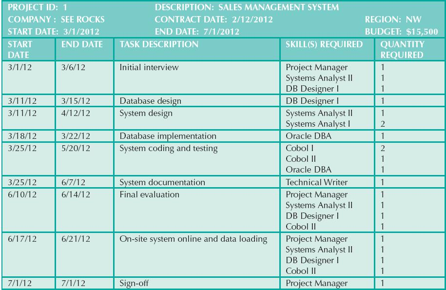
• GCS pools all of its employees by region; from this pool, employees are assigned to a specific task scheduled by the project manager. For example, in the first project’s schedule, you know that a Systems Analyst II, Database Designer I, and Project Manager are needed for the period from 3/1/12 to 3/6/12. The project manager is assigned when the project is created and remains for the duration of the project. Using that information, GCS searches the employees who are located in the same region as the customer, matches the skills required, and assigns the employees to the project task.
• Each project schedule task can have many employees assigned to it, and a given employee can work on multiple project tasks. However, an employee can work on only one project task at a time. For example, if an employee is already assigned to work on a project task from 2/20/12 to 3/3/12, the employee cannot work on another task until the current assignment is closed (ends). The date that an assignment is closed does not necessarily match the ending date of the project schedule task, because a task can be completed ahead of or behind schedule.
• Given all of the preceding information, you can see that the assignment associates an employee with a project task, using the project schedule. Therefore, to keep track of the assignment, you require at least the following information: assignment ID, employee, project schedule task, assignment start date, and assignment end date. The end date could be any date, as some projects run ahead of or behind schedule. Table P5.10c shows a sample assignment form.
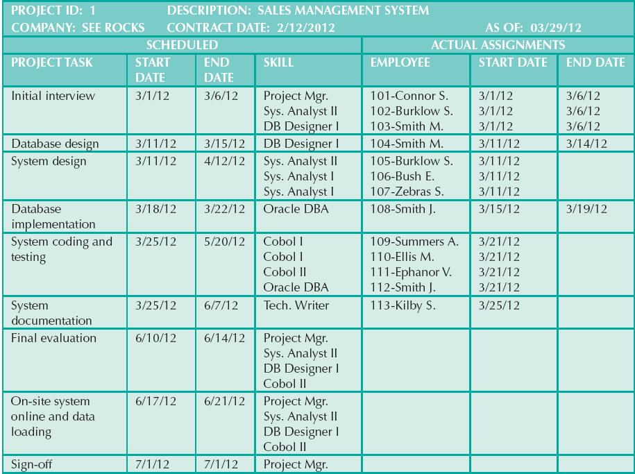
• Employee work hours are kept in a work log, which contains a record of the actual hours worked by employees on a given assignment. The work log is a form that the employee fills out at the end of each week (Friday) or at the end of each month. The form contains the date, which is either the current Friday of the month or the last workday of the month if it does not fall on a Friday. The form also contains the assignment ID, the total hours worked either that week or up to the end of the month, and the bill number to which the work-log entry is charged. Obviously, each work-log entry can be related to only one bill. A sample list of the current work-log entries for the first sample project is shown in Table P5.10d.
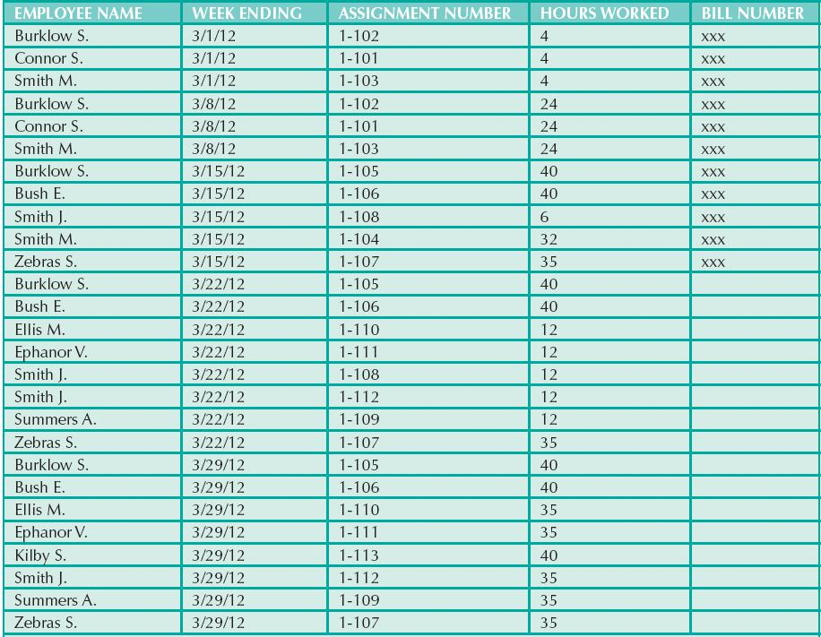
(Note: The assignment number is shown as a prefix of the employee name—for example, 101 or 102.) Assume that the assignments shown previously are the only ones as of the date of this design. The assignment number can be any number that matches your database design.
• Finally, every 15 days, a bill is written and sent to the customer for the total hours worked on the project during that period. When GCS generates a bill, it uses the bill number to update the work-log entries that are part of the bill. In summary, a bill can refer to many work-log entries, and each work-log entry can be related to only one bill. GCS sent one bill on 3/15/12 for the first project (SEE ROCKS), totaling the hours worked between 3/1/12 and 3/15/12. Therefore, you can safely assume that there is only one bill in this table and that the bill covers the work-log entries shown in the preceding form.
Your assignment is to create a database that fulfills the operations described in this problem. The minimum required entities are employee, skill, customer, region, project, project schedule, assignment, work log, and bill. (There are additional required entities that are not listed.)
• Create all of the required tables and required relationships.
• Create the required indexes to maintain entity integrity when using surrogate primary keys.
• Populate the tables as needed, as indicated in the sample data and forms.